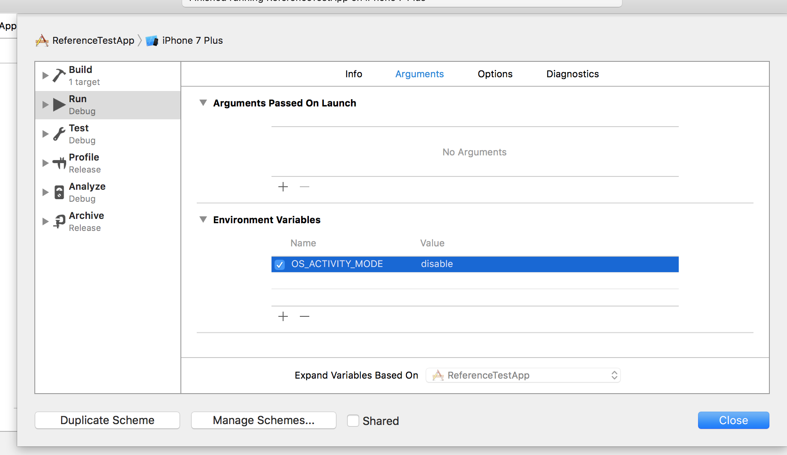

Project Setup
Prerequisites
- Xcode 8 or higher
- Deployment target of 8.0 or higher
CocoaPods
1.1 Install Cocoapods
CocoaPods is a dependency manager for Swift and Objective-C Cocoa projects.
CocoaPods is built with Ruby and is installable with the default Ruby available on OS X. We recommend you use the default ruby. Using the default Ruby install can require you to use sudo when installing gems.
sudo gem install cocoapods
1.2 Add MPS SDK as a dependency and Install it
List the dependencies in a text file named Podfile in your Xcode project directory:
platform :ios, '8.0'
target 'YOUR_PROJECT_TARGET' do
use_frameworks!
pod "nbcu_mps_ios_sdk", :git => 'https://github.com/NBCUOTS/mobile_mps_sdk_ios_examples.git', :tag => 'release-2.0.0'
end
Then install all your dependencies.
pod install
You should have access to "https://github.com/NBCUOTS/mobile_mps_sdk_ios_examples.git" repository.
1.3 Update App Transport Security in iOS 9
Google Mobile Ads SDK requires adding the NSAllowsArbitraryLoads exception to make sure your ads are not impacted by App Transport Security (ATS) on iOS 9 devices.
For iOS 10 devices, NSAllowsArbitraryLoadsForMedia and NSAllowsArbitraryLoadsInWebContent are required to make sure your ads are not impacted by ATS.
Add these values to the info.plist file of your application.
<key>NSAppTransportSecurity</key>
<dict>
<key>NSAllowsArbitraryLoads</key>
<true/>
</dict>
Reference: Google ATS details.
1.4 Update Simulator Scheme Environment Variables (optional)
If you want to disable system log messages, you can optionally add OS_ACTIVITY_MODE=disable to the Environment Variables under Arguments of the scheme.

1.5 If case of CocoaPods compilcation issues
Make sure you are using cocoapods >= "1.3.1".
And make sure Swift Version of the pod was successully set

1.6 Google SDK Updates
If you see a message about updating the Google Mobile Ads SDK, please contact the MPS SDK Support team prior to updating.
Email: mps-sdk-support@nbcuni.com, DPIM Slack channel: #mps_sdk_support